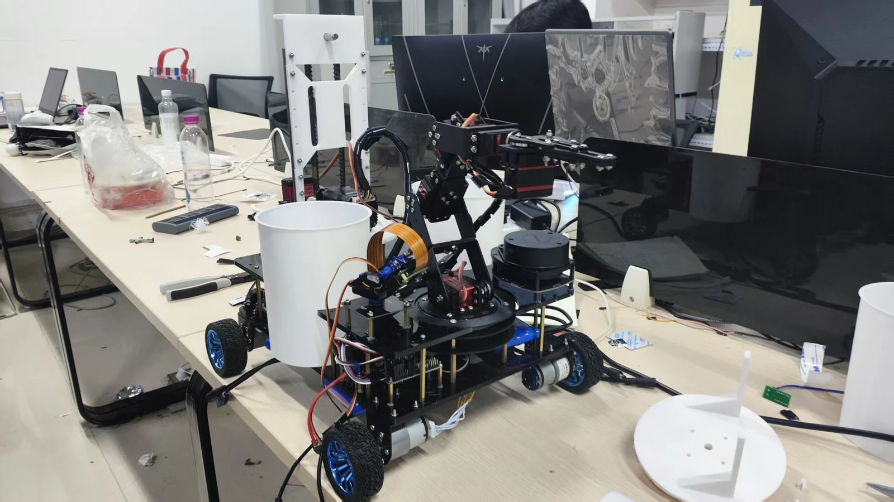
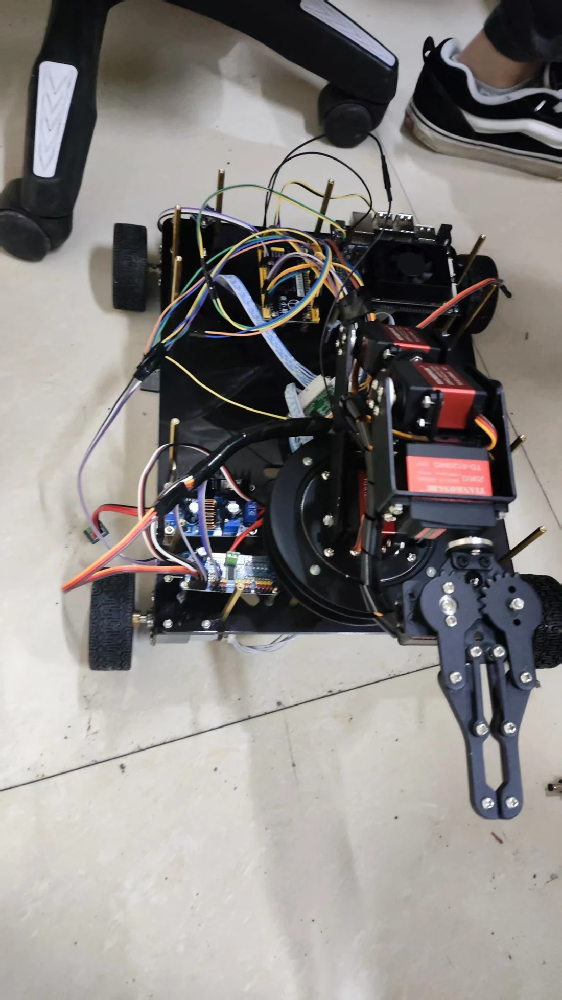

移动平台
确认四轮底盘可以承载机械臂、控制板与垃圾桶完成室内移动。
PROTOTYPE VALIDATION / 01
在最终整机重构之前，这台原型车先验证移动底盘、机械臂、夹爪与垃圾桶能否形成最小拾取闭环。
WHY PROTOTYPE
原型阶段不追求完整外观，而是尽快确认底盘、机械臂和夹爪能在同一平台上协同工作。 通过真实拾取测试，可以直接观察机械臂覆盖范围、车体稳定性、线路干涉和动作时序问题。
这些结果成为后续整机结构、布线方式、垃圾桶布局和控制流程重构的依据。
MINIMUM LOOP
用最小可运行系统逐段验证运动与操作能力。
确认四轮底盘可以承载机械臂、控制板与垃圾桶完成室内移动。
验证机械臂安装位置、关节活动范围与地面目标之间的几何关系。
测试夹爪接近、闭合、抬升和保持物体时的稳定性。
将底盘接近、机械臂动作和垃圾回收串联为连续任务。
LIVE TEST / 02:08
视频记录早期原型在室内场地接近目标、执行机械臂动作并完成拾取验证的过程。
HARDWARE RECORD
原型保留了开放式结构，便于快速调整安装位置、线路和执行机构。


ITERATION
原型证明拾取动作可行，也暴露出结构集成、线路管理、传感器布局和任务协同方面的问题。
开放结构、快速接线，以验证底盘和机械臂动作链路为主。

重新组织机械结构、感知系统、双桶分类和自动倾倒链路。
OUTCOME
确认移动底盘与机械臂可以组合成可运行的拾取平台。
提前发现机械臂覆盖、整车重心、线路干涉和动作时序问题。
为后续 ROS2 任务流程、视觉定位和整机结构重构提供实机基础。